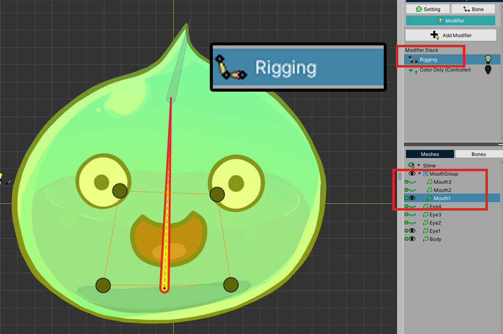

AnyPortrait > マニュアル > 「Color Only」モディファイア
「Color Only」モディファイア
1.3.3
制御パラメータやアニメに基づいてメッシュの色を変えたり隠したいときに、以前までは、主に「Transformモディファイヤ」を利用しています。
しかし、あえてメッシュの形や位置などを変更しない場合でも、Transformモディファイヤを使用することはやや不必要に見えます。
したがって、この場合に使用するのは良い、新しいモディファイヤがv1.3.3に追加されました。
このページで紹介する「Color Onlyモディファイヤ」をご利用ください！

(1) メッシュグループの「Modifierタブ」を選択した状態で、「Add Modifierボタン」を押します。
(2) モディファイヤのリストから「Color Only（Controller）」と「Color Only（Animation）」モディファイヤを見ることができます。
- Color Only (Controller) : 制御パラメータによって対象の色や可視性を制御することができます。
- Color Only (Animation) : アニメーションのキーフレーム上のターゲットの色や可視性を制御することができます。

「Getting Started1（関連ページ）」で紹介した方法をそのままColor Onlyモディファイヤで再現することが可能です。
(1) Color Only（Controller）モディファイヤを追加しました。
(2) メッシュを選択します。
(3) 制御パラメータにキーを追加します。

「Transformモディファイヤ」に設定するのと同じように、「Color Onlyモディファイヤ」でメッシュの可視性を制御することができます。
Extra設定を使用

Color Onlyモディファイヤも「Extra設定」（関連ページ）をサポートします。
(1) 「Extra Optionボタン」を押してオプションを有効にします。
(2) 対象を選択して、制御パラメータのキーまたはアニメーションのキーフレームがある状態で、「Setボタン」を押します。
(3) 「Extra設定」ダイアログが開きます。ここで、レンダリングの順序を変更したり、画像を交換することができます。
Color Onlyモディファイヤを必ず使用している場合
「Color Onlyモディファイヤ」は、単純な機能だけを担当するので、「Morphモディファイヤ」はもちろんのこと、「Transformモディファイヤ」より高速です。
したがって、一般的には、最適化を目的として使用されるものです。
しかし、次の条件が満足されている状況では、「Color Onlyモディファイヤ」のみ使用が可能です。
- メッシュグループの「子メッシュグループ」が追加された状態
- 親のメッシュグループに本入りと「Riggingモディファイヤ」が存在する
- 「子メッシュグループのメッシュ」が「Riggingモディファイヤ」によって、親メッシュグループのボーン入りと接続された状態
- 子メッシュグループのメッシュの可視性や色を制御しようとする場合
この条件を満足した状態では、「Transformモディファイヤ」を使用することができません。
この場合には、「Color Onlyモディファイア」のみを使用してください。
次の説明でより詳しく知ることができます。

前で説明した状況を再現してみました。
「口の形メッシュ」が「子メッシュグループ」に含まれた状態で追加されました。

親メッシュグループの「Riggingモディファイヤ」を利用して、子メッシュグループのメッシュをボーンと接続しました。

この状態で、従来の方法で「Transformモディファイヤ」を利用してみましょう。
(1) 「Transform（Controller）モディファイヤ」を追加します。
(2) 問題となる「子メッシュグループのメッシュ」を選択します。
(3) モディファイヤに追加したいたが、リギングされた子メッシュは追加することができないというメッセージだけが表示されるのを見ることができます。
これは、子メッシュグループを通じたTransformの演算とRiggingの演算が衝突して、非常に奇妙な動きを見せる問題によってTransformモディファイヤが制限されるからです。

しかしながら、「Color Onlyモディファイヤ」を利用すると、そのメッシュを登録して制御することが可能です。